Reimagining Top Hat's search experience for mobile users, achieving feature parity with responsive designs and smooth mobile interactions.
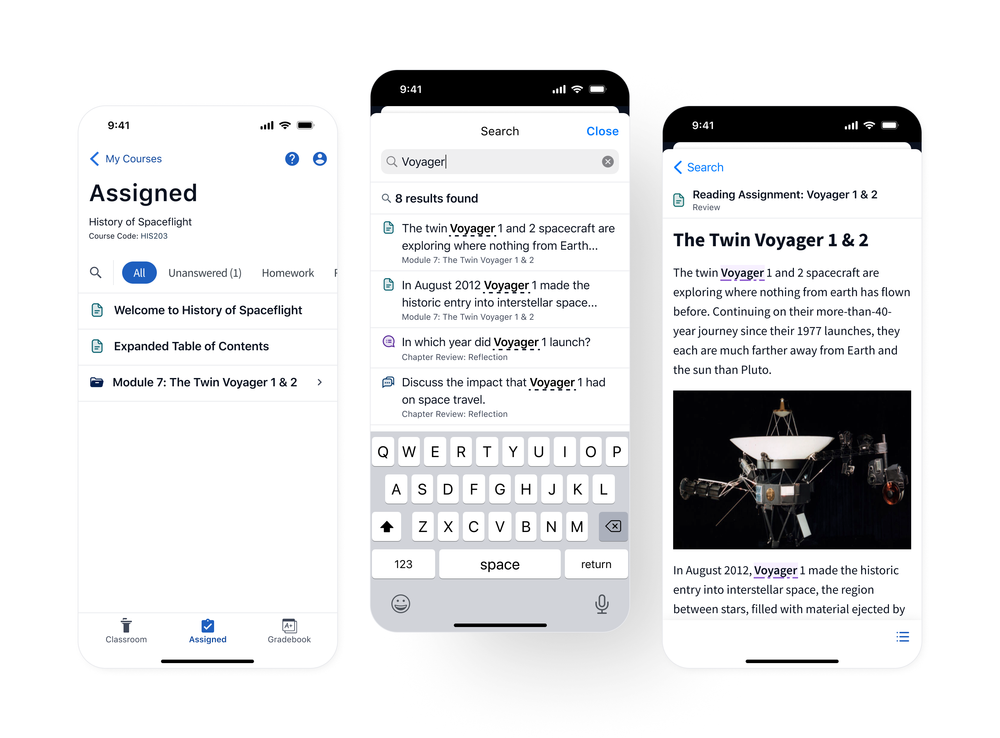
Click to expand
In 2023, Top Hat sought to improve its textbook reading experience by introducing a search tool allowing users to navigate their content using key terms and phrases. This feature was highly requested by students for both desktop and mobile devices, but was initially designed and developed for desktop.
During my time on Top Hat's mobile team I led the design to adapt this new search feature for the mobile app.
Prior to the launch of this feature, mobile users had no way to find specific information in their textbook. While desktop users could leverage “Ctrl + F” or “CMD + F” as a workaround, mobile users, who have no equivalent, were left to scroll endlessly through pages of content to find what they needed.
In addition to this, many of the design choices made for desktop did not translate to the app. The reduced screen size and vastly different standard interactions and patterns on mobile devices meant the solution had to be redesigned for iOS and Android users.
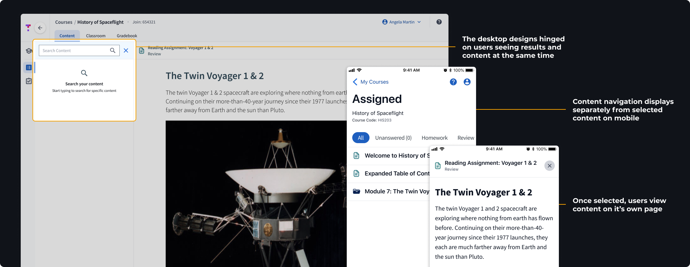
Click to expand
Before diving into specifics, we needed to determine where users would access the feature from. Our entry point needed to achieve two goals:
This was a rare new feature and search was not part of our user's current workflow. We needed to place the entry point somewhere so prominent no users would miss it.
The feature could search all content in the user's active course, but it could not search within the bounds of an individual piece of content, nor could it search other courses a user was enrolled in. The entry point needed to reflect the search area it covered.
I experimented with a few options, gathering feedback from developers and through critique sessions with the larger design team.
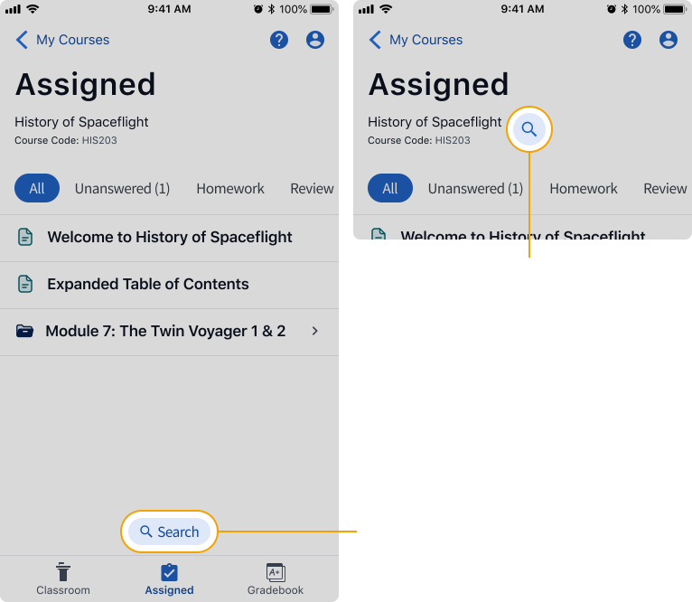
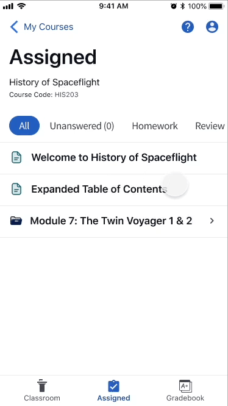
Click to expand
Placing the search button beside the content filter tags kept the entry point in close proximity to its search area as well as other related actions for sorting content. The location was also similar to what was implemented on desktop, creating a consistent experience.
The other options we explored didn't give us the discoverability we were looking for and felt too universal, as if the user could search the entire app.
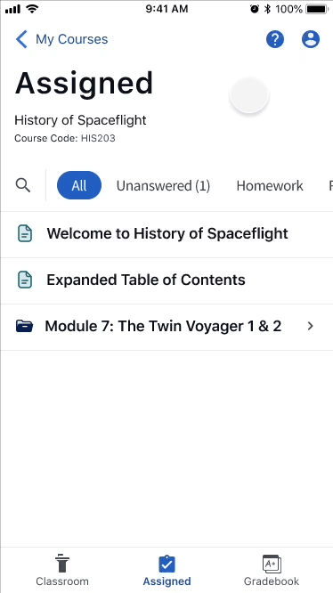
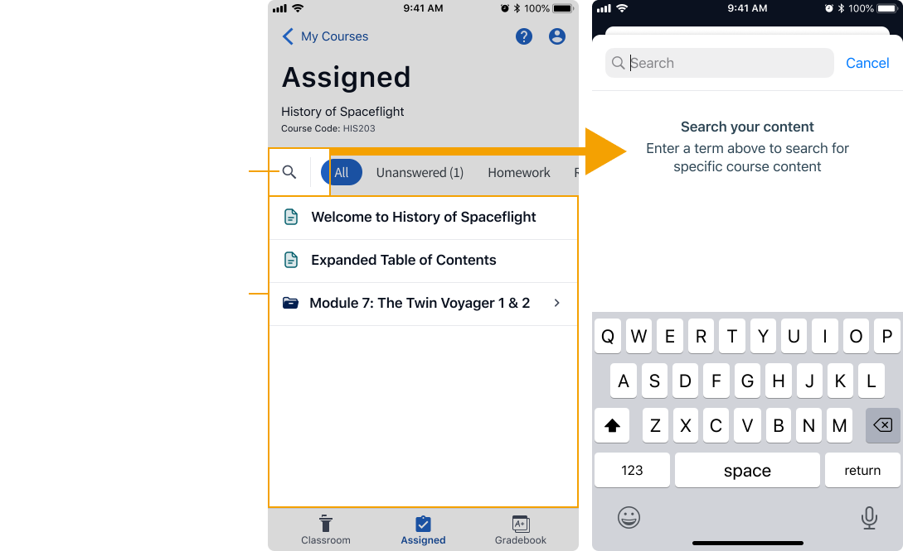
Click to expand
One of the biggest hurdles we faced adapting the search feature for mobile was the inability to show users the results list and related content at the same time. We needed to come up with a different way to draw a relationship between the two screens.
Initially, I experimented with a pop-up window that could be opened with a press and hold interaction. This pattern is similar to what Instagram, Pinterest, and many online shopping sites use to display a preview of content before making a selection.
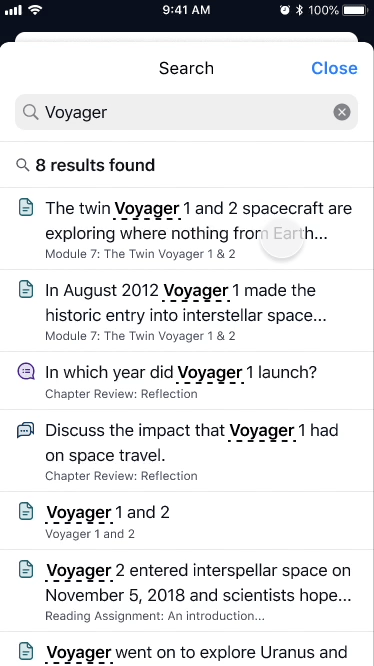
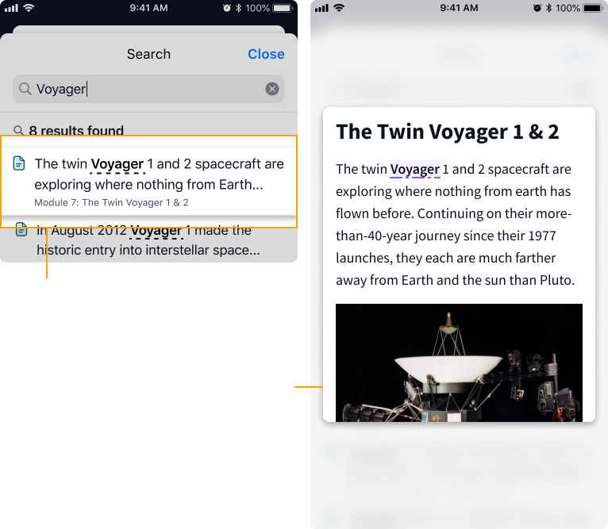
Click to expand
While it felt sleek and certainly did the job, the clear downside to the press and hold interaction was discoverability. We were concerned that users who aren't familiar with this pattern wouldn't discover it on the page, thus defeating its purpose.
Instead we leveraged a commonly understood mobile pattern and converted the search experience to use a full-height bottom sheet. This method allowed us to draw clearer boundaries around the search experience and include a permanent back button making it easy to move quickly between the results list and content.
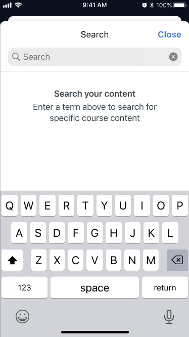
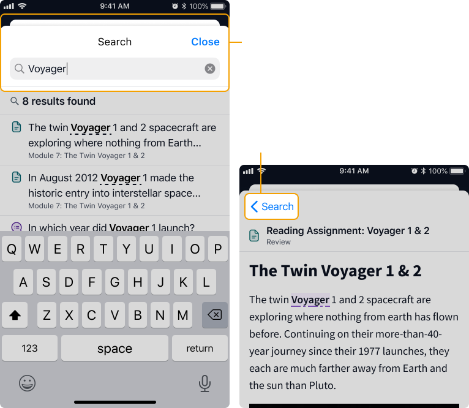
Click to expand
This project contained a significant amount of interaction design and detail, which meant good communication with developers and high quality specs were vital.
To keep us all on the same page, I crafted an in-depth spec document for us all to refer to. This document included:
I worked closely with the developers for both iOS and Android to collaboratively navigate challenges that arose throughout the implementation process. We used Slack huddles to quickly get on issues and brainstorm solutions synchronously.
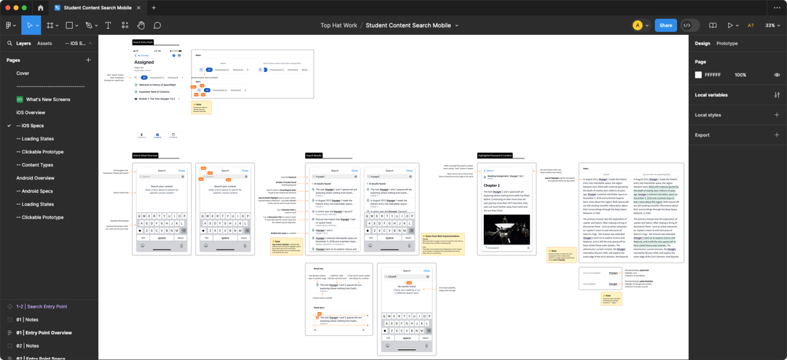
Click to expand
In the end, Top Hat's mobile app often struggled to keep up with the desktop version, leaving mobile users with an inferior experience.
Prioritizing the use of native iOS and Android components and opting for common mobile patterns allowed the team to move fast. As a result we were able to ship our final solution alongside the desktop version to provide users with a consistent experience across all devices.
At the end of the project, we delivered a highly requested feature to our users, improved the student experience, and significantly reduced support tickets.
Thank you to the mobile Product Manager Erina and to my fellow Designer Ilene for being such incredible partners throughout this project. Your feedback and support brought the final product to the next level.
Thank you as well to the amazing developers who worked on this project: Simon, Brian, and Blair your candid feedback, dedication to quality, and readiness to jump on a huddle to talk me through technical constraints was deeply appreciated.
The success of this project is due to the incredible level of expertise and dedication upheld by every member of the Top Hat Mobile Team.